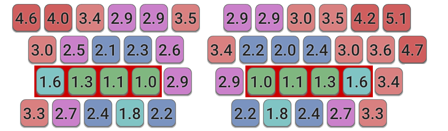

Colemak Mod-DH
A Colemak mod for more comfortable typing.
Colemak Mod-DH - Comparing Layouts
Finding a way to objectively compare keyboards layouts is not an easy task. There are many different factors to consider, as well as how much weight should be given to each factor. Scoring systems can be highly subjective. Nonetheless, such a system has been developed for just this purpose by taking into account several of the factors that drive efficient and comfortable keyboard use.
The scoring system used here simulates typing a large volume of standard English text¹, and rates each layout according to (in my view) the two most important considerations for keyboard layout design:
1. A base effort value based on the ease with which each key can be typed on average. This base effort value has been calculated using the Typing Effort Model described here.
 Keyboard Configuration²: Ergonomic Traditional Alternative Matrix
2. An additional penalty that is incurred where successive keys are typed where these represent an awkward pair. This primarily occurs when the two keys are typed with the same finger (i.e. same-finger bigrams). Certain other neighbour-finger combinations also incur a small penalty, such as pinky-ring and ring-middle finger pairs. In each of these cases, the amount of penalty also depends on the distance the finger moves to type both keys, i.e. the row-difference between the two keys forming the bigram.
| Bigram Penalties | same-row | row jump: top ⟷ middle middle ⟷ bottom | row jump: top ⟷ bottom |
| same-finger bigrams | 2.5 | 3.0 | 4.0 |
| pinky-ring bigrams | 0.5 | 1.0 | 1.5 |
| ring-middle bigrams | 0.1 | 0.2 | 0.3 |
These efforts and penalties are my estimations based on personal experience and discussions with others, but I think they're fairly reasonable. There are plenty of other models around, such as the ones here, here and here. You can try out the Keyboard Layout Analysis Tool to check the results or generate new ones using your own input values.
For each layout analyzed, the keyboard configuration used is in accordance with its recommended usage, which in most cases is the ‘traditional’ technique.
» Results
| Layout | keyboard config² | base effort per key | same-finger bigrams percent | bigram penalties | overall score effort per key |
Colemak-DH  |
matrix | 1.661 | 1.67% | 0.065 | 1.726 |
| Colemak-DH |
ergonomic | 1.670 | 1.67% | 0.065 | 1.735 |
| Soul |
alternative | 1.681 | 1.82% | 0.086 | 1.767 |
| MTGAP |
traditional | 1.731 | 1.25% | 0.056 | 1.787 |
| Colemak |
ergonomic | 1.739 | 1.67% | 0.063 | 1.802 |
| Workman |
traditional | 1.710 | 3.15% | 0.107 | 1.817 |
| Colemak |
traditional | 1.773 | 1.67% | 0.063 | 1.836 |
| Halmak |
traditional | 1.760 | 2.96% | 0.124 | 1.884 |
| Asset |
traditional | 1.795 | 3.12% | 0.117 | 1.911 |
| Dvorak |
traditional | 1.843 | 2.63% | 0.080 | 1.923 |
| Norman |
traditional | 1.711 | 6.42% | 0.215 | 1.926 |
| qgmlwyfub |
traditional | 1.793 | 4.66% | 0.143 | 1.936 |
| Qwpr |
traditional | 1.830 | 4.06% | 0.157 | 1.987 |
| Minimak-8key |
traditional | 1.863 | 4.10% | 0.142 | 2.005 |
| Qwerty |
traditional | 2.169 | 6.58% | 0.231 | 2.400 |
Hooray, Mod-DH comes out as the clear winner! Perhaps this is not surprising given the scoring system rewards use of the key locations that Mod-DH optimizes. A cynic might even argue that it is easy to win a competition when you choose your own scoring system! But unless you wildly disagree with the effort values used, Mod-DH should work out more comfortable than any of the layouts shown. And of course, if you think the input weights and penalties used need modifying, then why not try out the analysis tool with your own inputs to see how it affects the results!
It is my view that Mod-DH's optimized D and H positions are of almost home key quality, and these keys are often underrated in the design of other layouts. When using the Colemak layout, D and H are the most common non-home keys, so they ought to have good locations. Mod-DH is the only layout with the 10 most common keys in the 10 easiest-to-type positions.
While the Workman layout does a good job of making better use than Colemak of some easy-to-type keys, in the process it makes other keys unduly difficult (I am not a fan of its placement of D), and also increases the occurance of same-finger bigrams. Mod-DH takes some of the good design elements of Workman and applies them to Colemak, to produce a layout which is superior to both!
For a consideration of how easy or difficult the various layouts are to learn, take a look at the Difficulty Index comparison.
Notes
¹ Statistics are generated using a corpus which comprises a variety of books from Project Guttenberg, the same as used by carpalx.
² See the Layout Analysis Tool page for definitions of the Keyboard Configurations.